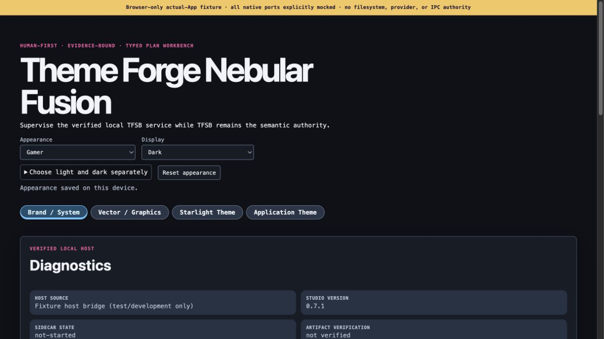

surface / paper
Warm clarity
Roles stay legible when the surface changes.
Nebular Fusion · 0.8.0 release
Nebular Fusion is the desktop workbench for inspecting Theme Forge brand systems as living pairs: a focused light surface, a deliberate dark surface, and the roles that connect them.
The maintained 0.8.0 release source includes paired-v2 and appearance work, with automated native checks passed on all three supported targets and a macOS build target of 13.3 or later. GitHub archives, npm, the Homebrew Apple Silicon formula, PyPI, Nix, APT, DNF, and pacman are published; the six-family catalog below remains a read-only development preview with collection, application selection, editing and persistence outside this static site.
Paired profile / Nebular
Roles stay legible when the surface changes.
Accent and status remain distinct on deep surfaces.
Use the workflow tabs, paired previews, and role controls to explore the idea. Edits stay in this preview.

Celestial weaver · Theme Forge
Theme Forge’s celestial weaver brings a little mythology to the workbench. Inspired by the Japanese weaving princess, she connects the family’s tools with a thread of starlight.
Six families · twelve surfaces
Every family is a pair, not a recolor. Compare the light and dark surface as separate specimens, then carry the roles into your own target.
Preview boundary. These isolated application specimens show the six-family development preview as paired light and dark surfaces. The maintained 0.8.0 release source includes paired-v2 authoring/packet exchange and application appearance controls, and automated native checks have passed on all three supported targets with a macOS build target of 13.3 or later. GitHub archives, npm, the Homebrew Apple Silicon formula, PyPI, Nix, APT, DNF, and pacman have matching 0.8.0 receipts; this static site still projects read-only specimens and source-profile downloads, while family collection, application selection, editing and persistence remain development-preview features.
Monospace chrome, warm paper, and a cyan hairline for focused documentation.
Paired iframe · isolated application specimen · Download Terminal Nova v2 source (development preview input)
Purple depth and editorial gold for a calm workbench with a bright point of focus.
Paired iframe · isolated application specimen · Download Nebular v2 source (development preview input)
Restrained cool hierarchy, practical monospace chrome, and controls that recede.
Paired iframe · isolated application specimen · Download Developer v2 source (development preview input)
Neutral, accurate surroundings for inspecting documents without visual noise.
Paired iframe · isolated application specimen · Download Graphic Designer v2 source (development preview input)
Expressive lavender and rose palette candidate; typography and artwork pending.
Paired iframe · isolated application specimen · Download Anime v2 source (development preview input)
Energetic geometry, deliberate light/dark separation, and accents that signal intent.
Paired iframe · isolated application specimen · Download Gamer v2 source (development preview input)
From brief to export
Nebular keeps the decision visible while you move from intent to target-specific output. The interactive workflow preview above mirrors this four-step mental model.
01 / Brief
Record what the surface needs to make easy: reading, inspecting, composing, or acting. A family can be expressive without making status or focus ambiguous.
Output: a concise profile brief with roles, target notes, and an explicit contrast intent.
02 / Compare
Review the same hierarchy on light and dark surfaces. Look for document text, focus rings, status meanings, and primary actions that changed role instead of simply changing colour.
Output: a paired review with target differences recorded instead of hidden.
03 / Revise
Adjust a surface, control radius, or accent while keeping the surrounding contract in view. The goal is a readable system, not a pile of one-off overrides.
Output: a bounded revision with the reason and affected target mapping.
04 / Export
STTN and CTTN share family intent while preserving their own component vocabulary. Export makes those mappings discoverable instead of promising pixel-identical output.
Output: a target-specific artifact with any unsupported intent called out. Download the Developer v2 development-preview source.
Browser source preview
This exact-byte capture comes from the Theme Forge App/external CSSOM source fixture. It is a browser-rendered development preview with an explicit mock boundary, not a screenshot of a published Nebular Fusion release interface.
Browser-rendered source preview · native ports mocked

Published 0.8.0 · GitHub/npm/Homebrew/PyPI/Nix/APT/DNF/pacman
Nebular Fusion 0.8.0 is published through GitHub native archives, npm, the Homebrew Apple Silicon formula, PyPI, and Nix. PyPI carries an explicit 0.8.0 version and Nix uses its pinned release ref. Signed APT, DNF, and pacman repositories provide 0.8.0 for Linux AMD64 and ARM64, with package-manager-managed installation. The 0.8.0 source includes paired-v2 authoring and application appearance capabilities, and automated native checks have passed on all three supported targets with a macOS build target of 13.3 or later; the instructions below keep each channel on its own verified receipt.
npm · global wrapper
npm install --global @knowledge-forge-ai/theme-forge-nebular-fusion@0.8.0
tfnf --versionnpm selects exactly one optional 0.8.0 native package for the selected host: Darwin ARM64, Linux ARM64, or Linux x64. Use tfnf --path to print the authenticated executable path without launching.
Available for this platform from the published 0.8.0 registry set. Native package selection is host-specific. 0.8.0 is published for this channel; consult the matching release and channel receipt.
Open the 0.8.0 release record